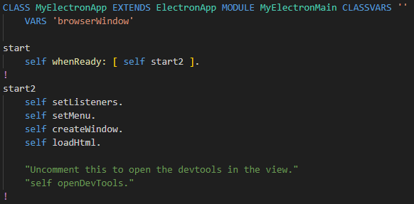
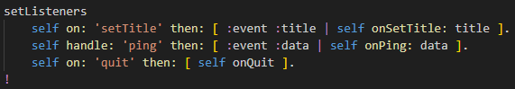

Now back to the file
src/Node/MyElectronApp.st in VSCode

Electron apps have a single main process, which acts as the application's entry point.
The main process runs in a Node.js environment, meaning use all of Node.js APIs.
The ST app is started by the code in
/src/main.ts , as usual.
Notice that
MyElectronApp inherits from
ElectronApp.
The app class is placed in module
MyElectronMain ,
which
must be different from the modules used by the API and view later on.
Instance variable
browserWindow will refer to that view.
Method
start does some extra waiting required by Electron.
Method
start2 actually starts the app with the indicated operations.
Scroll down to the method
setListeners that looks like this:

This method sets up handling for events requested by the browser view:
- Changeling the title of the app window.
- Ask some data (with 'ping') that is aswered (with 'pong').
- Quiting the app.
You can check out the methods below that perform the actions
and anwer back any result to the browser view through the custom API.